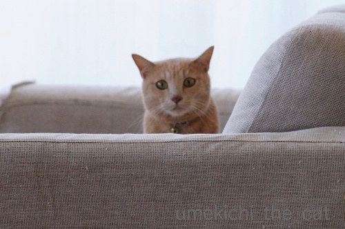
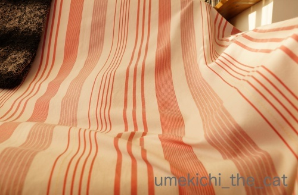
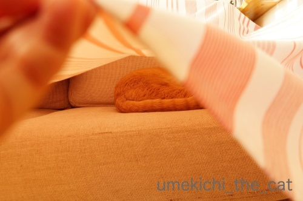
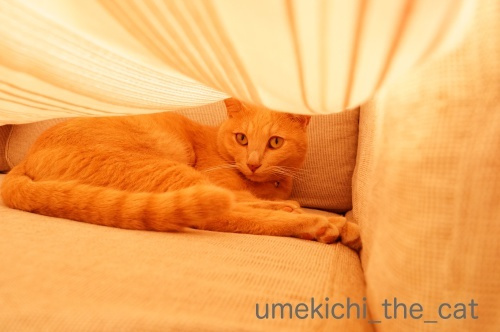
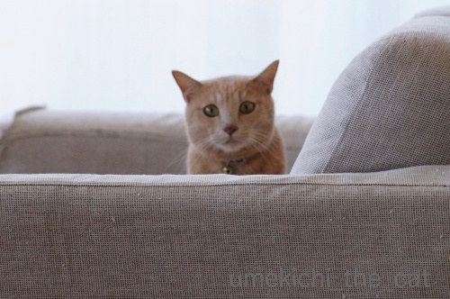
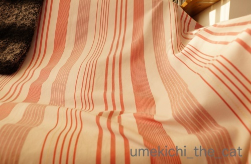
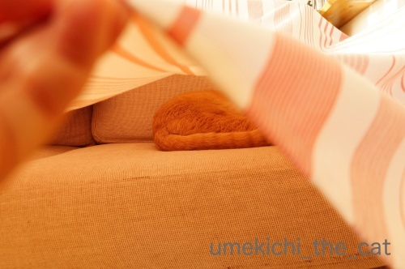
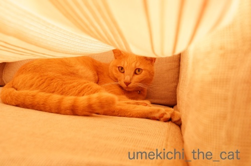

かくれんぼいろいろ [梅吉]
リビングの入り口でよく目にする光景。

こちらの様子をうかがってます。

さらに近づくと身を低くして隠れてみる。

下僕も身を低くして息を殺していると心配になるのか覗いてきます(*>艸<)

![[猫]](https://blog.ss-blog.jp/_images_e/101.gif) あ〜 わし みつかってしもた〜
あ〜 わし みつかってしもた〜
見つけて欲しいくせにwww

ソファーのマルチカバーの下、不自然な膨らみが！！
かくれんぼですかー0(≧▽≦)0

ちらりとめくると

めっちゃ迷惑そうでした(-_-メ)

のぞかんといてや
はいはい、ごめんなさいね。
喜ぶときもあるのに・・・
最後はクイズです！
梅吉はどこ？一緒に探してください！！
（15秒です＾＾）
わかりましたか？ ( ´艸｀)
 ↑ガブッと一押し↑
↑ガブッと一押し↑
時々食べたくなるんですが（家では簡単にできますが）外ではあまり見かけないメニュー。
このジャンクな感じがたまらないんですよね！！
パスタを軽く炒めて一仕事してあります。
卵も外せない！！
このお店、全店舗にカレースパがあるわけじゃないのが悩ましいですw

こちらの様子をうかがってます。

さらに近づくと身を低くして隠れてみる。

下僕も身を低くして息を殺していると心配になるのか覗いてきます(*>艸<)

見つけて欲しいくせにwww

ソファーのマルチカバーの下、不自然な膨らみが！！
かくれんぼですかー0(≧▽≦)0

ちらりとめくると

めっちゃ迷惑そうでした(-_-メ)

はいはい、ごめんなさいね。
喜ぶときもあるのに・・・
最後はクイズです！
梅吉はどこ？一緒に探してください！！
（15秒です＾＾）
わかりましたか？ ( ´艸｀)
時々食べたくなるんですが（家では簡単にできますが）外ではあまり見かけないメニュー。
このジャンクな感じがたまらないんですよね！！
パスタを軽く炒めて一仕事してあります。
卵も外せない！！
このお店、全店舗にカレースパがあるわけじゃないのが悩ましいですw
2018-10-18 00:00
nice!(60)
コメント(26)

カフェオレ色の梅吉

梅吉 2023年8月10日 永眠


梅吉と出会った譲渡会

犬猫の理由なき殺処分ゼロ
妄想広告
UMEKICHI 光

爆発的に早い！
時々攻撃的！
Thanks to Mr.Boss365
爆発的に早い！
時々攻撃的！
Thanks to Mr.Boss365

うちでもシーツやタオルケットなどに膨らみがあると誰か寝てます。
梅吉さんは風呂イスにすっぽり入ってますね。梅吉さん用に合わせたみたいにぴったり。
by zombiekong (2018-10-18 01:27)
忍者だ…。|д´)
のぞき穴から視線発見！。。
でも曲者じゃなさそうだｗ
にゃんあるあるですけど、、
ソファーカバーをファサーってかけると、、
その場で身を潜めますよね…。。
こんもりそこだけふくらんでるけどねｗ萌♪
by 猫毬 (2018-10-18 01:28)
かわいいいいいいいいいいいい(///∇///)
by あとりえＳＡＫＡＮＡ (2018-10-18 02:29)
ほんとにかわいいです
こういうところ大好きですよね
by 花好き人 (2018-10-18 07:14)
器用に入り込みましたね＾＾
by ぽちの輔 (2018-10-18 07:18)
梅吉さん、カメラを前に体を低くして
ソファに隠れた気になってもw
まさかの椅子の下というか中に隠れるなんて
こんなに上手にどうやって隠れたのか不思議です( ^ω^ )
by ニッキー (2018-10-18 07:49)
まさにチラリズム(#^.^#)
可愛くてたまりません♪
by きぃ (2018-10-18 08:14)
見つけて欲しいのか、欲しくないのかー(^_^;)
きっとこんなやり取りが毎日あるんでしょうね。
動画も可愛いです。
by よーちゃん (2018-10-18 09:02)
見つけてほしいかくれんぼって
すごい可愛いですよね～(笑)
お風呂場でも、ちょっとだけ見せてるしｗｗ
しぐさが可愛すぎだよ、梅吉君！
カレースパ、美味しそうだわ。パスタを炒めてあると、香ばしさも増しそうだね。
by リュカ (2018-10-18 10:25)
隠れて見つけてもらうのがうれしいのでしょうね！
パソコン打つのに下見るのがつらいです(^^)
by ma2ma2 (2018-10-18 10:26)
おはようございます。
梅吉君のソファーからチラッと見える頭部（2枚目）！！
これだけでメインデッシュになります！！（笑）可愛すぎます！！
小生も時々やりますが、ジィーと見つめて動きなし？飽きられています。
風呂イス？微妙に手が出て動いていますね？
これは「トロイの木馬」作戦ですね！？(=^･ｪ･^=)
P.S 今日の昼食は、カレースパにします。
by Boss365 (2018-10-18 10:43)
梅吉さん、左手のチラリって誘ってます？
気づいてますよ（笑）
こちらからは覗いていたのですね〜
目が合いましたよ（笑）
by kiki (2018-10-18 14:54)
梅吉さん、張り込みしているみたいですね!
古いですが、「太陽に吠えろ」のテーマソングが頭を過ぎってしまいました(^^)
by kou (2018-10-18 17:13)
上目遣いの梅吉くん可愛いよ～♪
見つからないように～。でもなかなか見つけてもらえないと
寂しくなっちゃうのは人もにゃんも同じですね(*^-^*)
梅吉くん見つけましたよ～。
少し動くのが楽しいｗイスどうやって被ったの～(≧▽≦)
by emi (2018-10-18 18:11)
身を低くしている梅吉さん、可愛い～＾＾
見つかっちゃった！って＾＾
ゆったりかかったカバーも入り込みたそう‥
嬉しそうなときもあるのに～迷惑そうなときもあるんですね＾＾；
クイズ、すぐちょろっと動きが‥椅子ごと動いてる～うふふ♪
ちょうど窓？から覗ける位置だったとは＾＾
カレースパって食べたことあるかしら‥ちょっと炒める、って美味しそうです＾＾
by sana (2018-10-18 19:14)
2枚目のちょっと平べったくなってる耳がかわいい～(≧▽≦)
完璧に隠れているつもりでも、どこかチョロっと出ているのがまた愛らしく♪
お風呂の椅子はお見事！気づかずこれでスス～っと動いたら腰を抜かしそうです(*^▽^*)
どうやって入ったのか気になります^^
by ゆきち (2018-10-18 20:27)
何も知らずにお風呂の椅子がズズズと動いたらぶったまげますね！^^;
ちゃんと脱出できましたか？
by yes_hama (2018-10-18 21:55)
ユキとかくれんぼを時々します。
遠くから柱の陰でユキを見つめると、ユキも見つめてくれます。
でも、それだけです。
それ以上の反応がありません^_^
by riverwalk (2018-10-18 22:34)
ねこさんって、あの「ちらりずむ」が好きなんでしょうかね^^
と、いうか、ソファが大きくて心地よさそうです♡
（寝落ちしそう・・・）
お、おおっと・・・ちらっと溶接工さんが見えましたよ？
カレースパ!?
レトルトでやったら再現できそうな・・・？
（キーマカレーでやってもおいしいかも・・・）
by Ja-Kou66 (2018-10-18 23:57)
分かったニャ（ﾟ□ﾟ）
しかし、猫は何処にでも隠れるんだね。
by 英ちゃん (2018-10-19 00:34)
きゃわいい～！梅吉さん、発見^^確保にゃあ～^^
by ニコニコファイト (2018-10-19 06:56)
きゃっ！可愛い子、みーつけた♪
（〃д〃）きゃ～♪
by Ginger (2018-10-19 14:55)
zombiekongさん＞
うちは家も狭いし梅吉しかしないので大丈夫ですが
７にゃんさんもいたら誰かの抜け殻のフェイク膨らみが存在しそうですw
気を使って避けていたのに、あら？すかーっ・・・・みたいなwww
お風呂の椅子はまさにシンデレラフィットでした0(≧▽≦)0
目の位置もぴったんこ！
猫毬さん＞
この忍びのもにょが「わしは隠れている！」と主張したら
周りは「はい、見えません！」と言わねばなりませんw
布の下は大好きですよね！
毎朝のベッドメークの時も飛び込んでくるので
なかなか進みません・・・
二度寝しようとするしwww
ご一緒したくなるしwww
あとりえSAKANAさん＞
お目目キロキロですよー0(≧▽≦)0
ちなみに目があっても自分は飼い主には見えていない、
と思ってますwww
花好き人さん＞
ありがとうございます(≧▽≦)
物陰、何かの下、大好きですよね！
最近は膝を立てて座っているとその下に入り込んで来ます。
膝を下ろせなくてつらい・・・ (^_^;)
ぽちの輔さん＞
あ、バレちゃいましたw
入りたそうに椅子の下に頭を突っ込もうとしていたので
おっとが軽く持ち上げるといそいそと入って行ったそうですw
ニッキーさん＞
にゃんこは隠れるの下手ですよねー！
下僕が見えませんよーとお付き合いするので
いつまでも上手にならないんでしょうかw
お風呂の椅子は・・・潜り込もうとしていたので
持ち上げるといそいそと入って行ったそうですwww
きぃさん＞
チラ見えってどうしてこんなに可愛のでしょうねー！
もちろん全部見えても可愛いですけどwww
よーちゃん＞
見つけて欲しいのか、欲しくないのか・・・
梅吉の葛藤も複雑かな？
その葛藤を懸命に理解しようと下僕は日々頑張るのです(^_－)☆
そして自分がいかににゃんこに尽くしたかを思って
ニヤニヤするのですwww
リュカさん＞
かくれんば、どうやったら下僕を喜ばせることができるか
も考えているような気がしますw
わざとにちらっと手を出したりして？ ( ´艸｀)
最近は隠れているのににんげんが反応しないと
「うわあぁ〜〜〜！！！」と呼びつけるようになりましたw
カレーパスタはご飯とは一味違う楽しみがありますよね！
はねたら洋服にシミが残っちゃいそうだから
食べるときにとっても気も使う食べ物ですwww
ma2ma2さん＞
下見るのがつらい・・・ムチウチ気味のせいなんでしょうか。
頭は怖いのであまり無理せず療養してくださいね！
Boss365さん＞
平べったい後頭部はとっても可愛いですよね！
私もこの頭のかたちには「お代わり持って来て！」状態です0(≧▽≦)0
トロイの木馬作戦！？
これは下僕と梅吉の戦いだったのですね！
お風呂の椅子の中から夜になると小さい梅吉がわらわらと・・・
きゃ〜〜〜、(うれしくて）鼻血出そうですw
kikiさん＞
お手手とお尻尾がなにげにちょろっと出ていますよね＾＾
それも下僕にはたまらないポイントです！
目が合いましたか？う〜ん・・・
梅吉はきっと「みえてなんか ない！」と
言い張ると思いますのでお付き合いよろしくお願い致します(*>艸<)
kouさん＞
お目目キロキロの張り込みですね！
通り名は「梅さん」？時代劇みたいなので「キャット」？？
（そのままですねw）
太陽にほえろ!は子供の頃大好きなドラマでしたー＾＾
神田正輝さんとか渡辺徹さんの時代でしたwww
emiさん＞
見つけて欲しい、でも簡単に見つかっちゃつまらない・・・
梅吉の気持ちは手に取るようにわかるのですが
でも！その前に全部見えているんですけどーって(*>艸<)
椅子で武装の梅吉、入りたそうに頭を突っ込んでいたので
おっとが軽く持ち上げるといそいそと入って行ったそうですw
sanaさん＞
下僕にはしっかり全身見えてるんですけどね！
見つけましたよー、と演技するのも楽しいものです＾＾
カバー下に入った直後は遊ぶ気満々みたいなんですが
そのうち眠くなっちゃうみたいで・・・・
そんなときは迷惑そうな顔されちゃいますwww
カレースパ、カレーの残りがあって
お昼に一人でパスタを茹でる気になった時作るのですが・・・
そんなタイミングは２〜３年に一度あるかないかくらいなもので (^_^;)
お昼の煮炊きってしたくないですよねw
簡単なのに外で食べるメニューです！
sanaさんも面倒ではない時お試しあれ〜＾＾
ゆきちさん＞
そのチョロっと、ウケ狙いでわざとに出しているでしょ、
と言いたくなるくらいはみ出しますよね、猫様は(*>艸<)
動くお風呂椅子、武装しているようにも見えますよね！
にゃんこトランスフォーマー？www
梅吉はお風呂場で遊ぶのが好きなのですが
椅子の下に頭を突っ込もうともぞもぞしていたので
おっとが軽く持ち上げるといそいそと入って行ったそうです(^_^;)
yes_hamaさん＞
椅子妖怪現る！？状態ですよね(*>艸<)
椅子の下に頭を突っ込もうともぞもぞしていたので
おっとが軽く持ち上げるといそいそと入って行ったそうですよw
出るときは持ち前の破壊力を発揮してば〜ん！と
椅子を蹴散らしながら飛び出してきましたwww
riverwalkさん＞
ユキちゃんはおんにゃこのですもの＾＾
じっと見つめ合うのが楽しいのですよ♪
Ja-Kou66さん＞
ソファ、二人掛け用ですが梅吉がながーくなると一人で占領されますw
彼は広々と心地よく使っているようですよ (⌒_⌒;
おお！確かに溶接工ですね！！
夏場、黒いこういうの被ったおばちゃんも出没しますねwww
残り物のカレーが冷蔵庫にある、のは良くあることなのですが・・・
一人の食事の時パスタを茹でる、のハードルが高くw
お昼ご飯にぴったりのメニューだと思うのですが
なかなか家で再現できません。。。
英ちゃんさん＞
見つかっちゃいましたかー(*>艸<)
でもなかなか見つけられないフリしてくださいねw
ニコニコファイトさん＞
キロキロお目目で見てますよw
お風呂の椅子には気をつけてくださいね＾＾
梅吉が潜んでいるかもしれません。
Ginegerさん＞
きゃっ(〃▽〃)見つかっちゃいましたか！
見つけられないフリして「梅吉、どこ〜？」と探すと
とっても喜ぶのでお付き合いくださいね(^_－)☆
by ちぃ (2018-10-19 15:56)
最初の4枚めちゃめちゃかわいいんですが…！
ビデオはおふろの椅子あしがちょろっと見えて動くのがかわいい。
しかし、あのアナからしっかりのぞいていたとは!?
by ふにゃいの (2018-10-20 19:43)
カレーパスタ、初めて拝見しました！
卵も入ってるんですね。
確かに、パスタも炭水化物ですし
ナンと原料は同じようなもの...
目からウロコ。
by ryang (2018-10-20 22:35)
ふにゃいのさん＞
この状況で「お！このあなから のぞいたろ♪」って
考えてると思うとなんとも可愛くて( ´艸｀)
しかもお目目が楽しそうで笑ちゃいましたwww
ryangさん＞
カレーうどん、カレーそばあるなら
カレーパスタがあったっていいじゃない？
という発想でしょうかw
きっとどこかのだれかはカレー雑煮もしているかもしれませんね( ´艸｀)
（自分で書いてて美味しそうだと思った＾＾）
by ちぃ (2018-10-22 13:45)